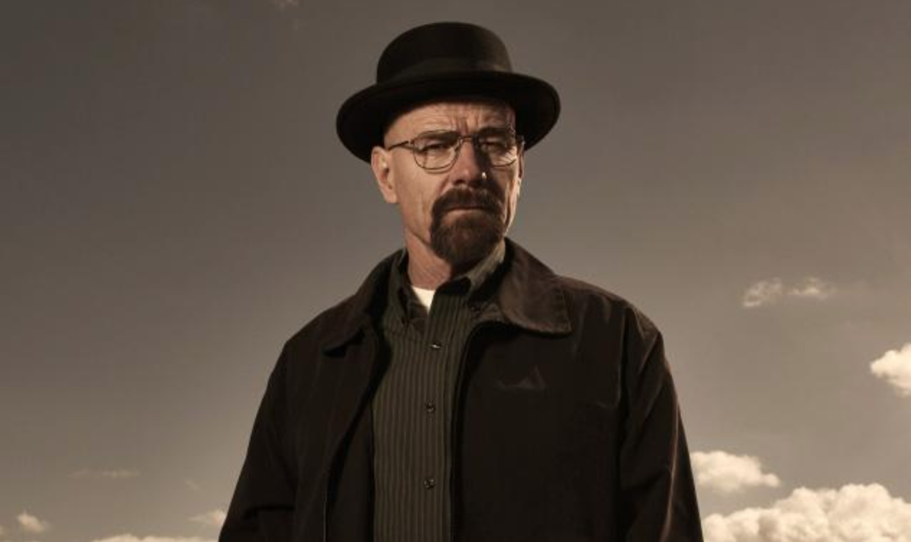
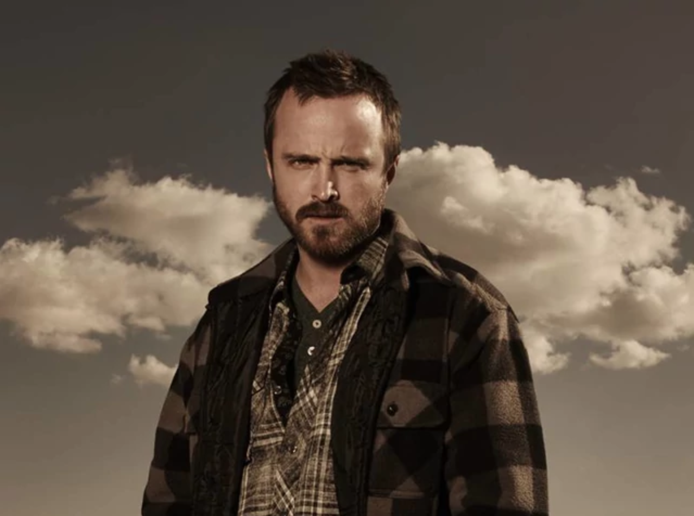
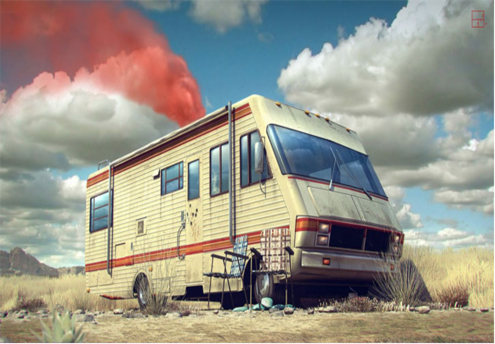
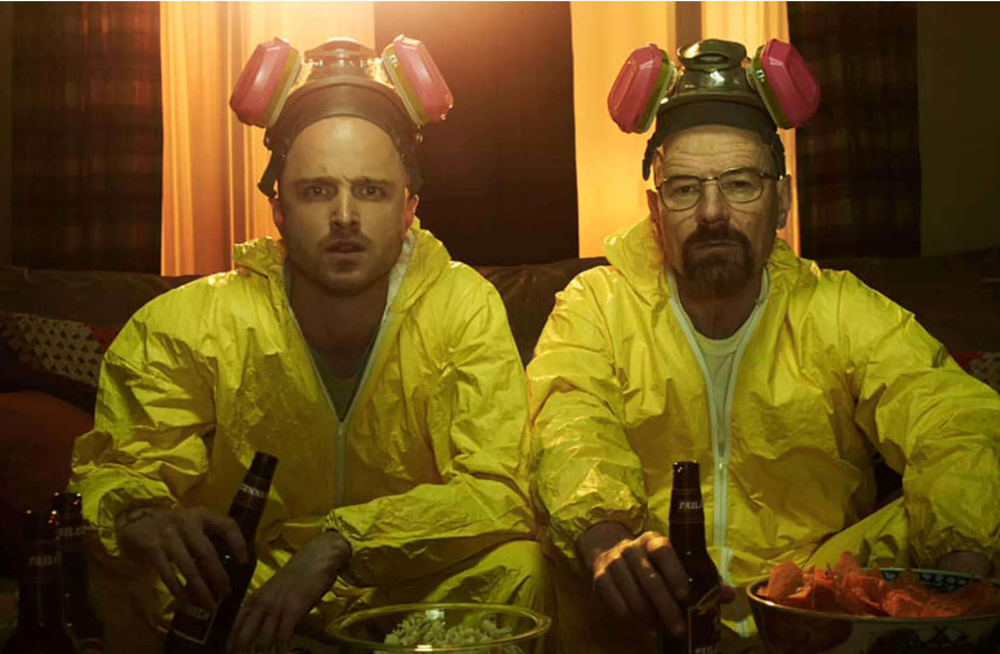
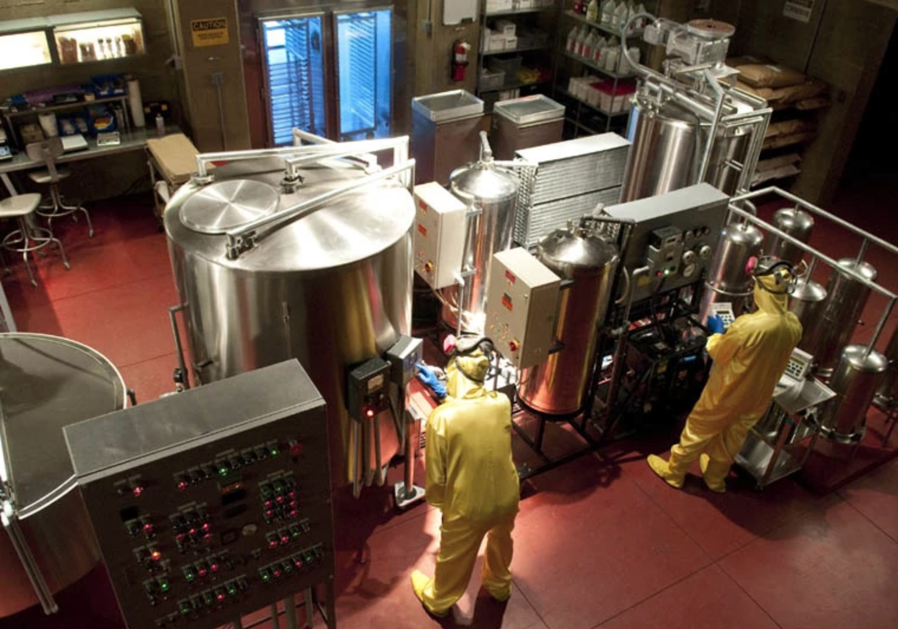
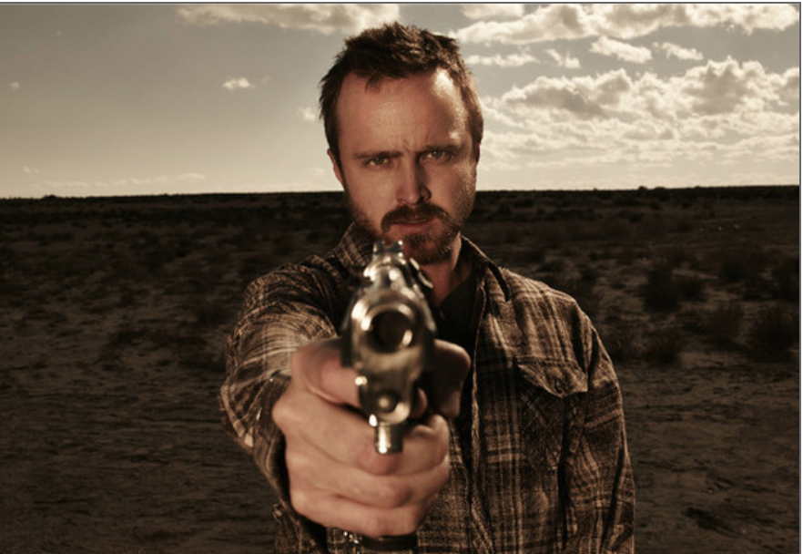
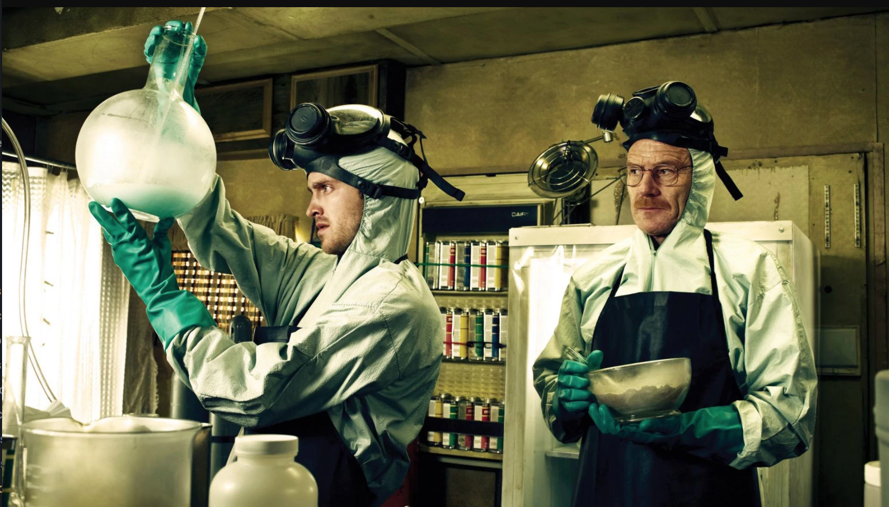
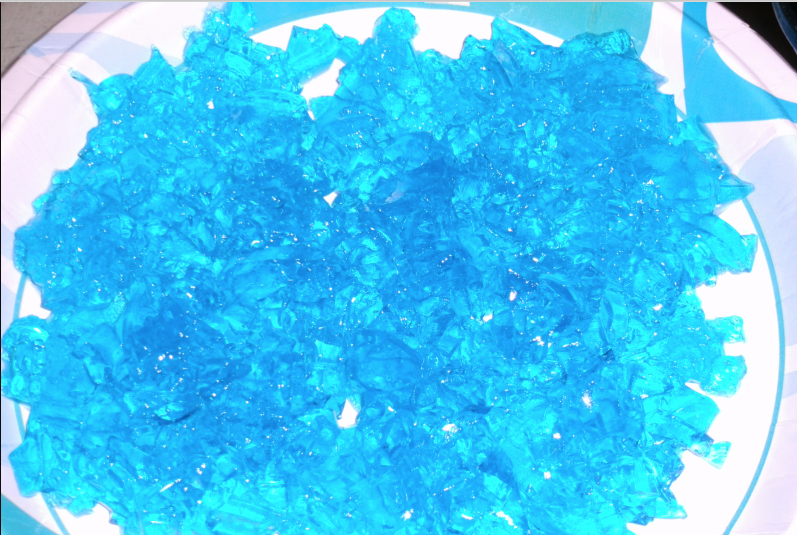
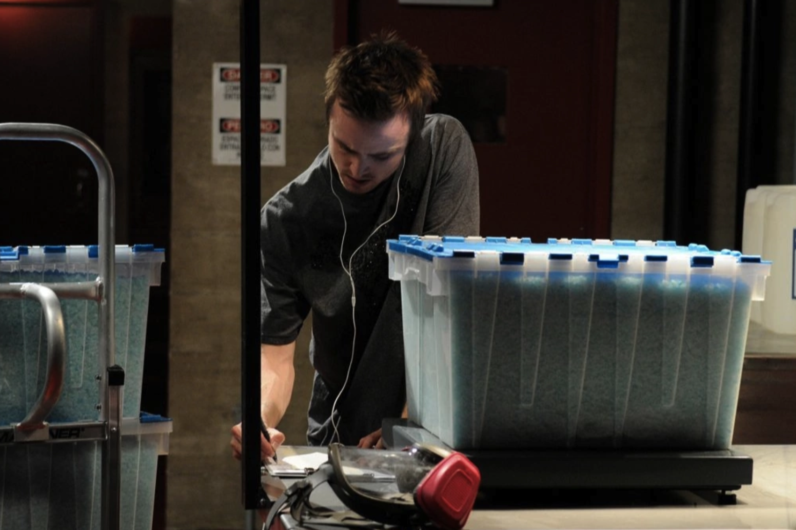

X
About
After being diagnosed with cancer, Walter White decided he had nothing to lose when he accepted a 'ride-along' request for a drug bust extended to him by his brother-in-law Hank Schrader, (now ASAC Schrader). It was at this drug bust that White learned that his former student, Jessie Pinkman, was the infamous 'cook' known as "Captain Cook", as he saw him escaping through a neighbor's bedroom window. After thinking about his predicament, White decided not to turn in Pinkman, but instead go into business with him. What followed, neither of them could have imagined.
White, former owner and co-founder of 'Gray Matter Technologies', sold his shares before it went on to become a multi-billion dollar company. Rather than beat himself up, White put his Chemist mind to work on how he could make the best methamphetamine possible. As White put it, "it's simple chemistry". White approached Pinkman late on evening and proposed his idea, after all, Pinkman's partner was picked up earlier by the DEA. "You know the business, I know the chemistry", White told Pinkman. After blackmailing him to work with him, they started their business venture.
After a rough start and a few deaths, White and Pinkman got their business off the ground, their first lab being in a mobile RV. "It was perfect", White said, as it allowed them to be mobile, discreet, and isolated from the public, as they drove out to the desert to complete their work. It wasn't long until they realized that this business needed a lawyer, hiring 'Criminal' lawyer Saul Goodman, who advised them that they needed a distributor.
White and Pinkman eventually joined forces with a man named Tuco, but due to unforseen circumstances and not exactly seeing eye to eye, White and Pinkman killed Tuco and and decided to go solo. It was here that White and Pinkman then joined under none other than Gustavo Fring (owner of the world famous 'Los Pollos Hermanos'), the only fried chicken that gives the Colonel a run for his money. Fring, being the business man that he is, hooked up White and Pinkman with a world-class lab to do their work.
It is here that their business broke out of Albuquerque, as their signature 'blue-sky', can now be found all over the midwest, Mexico and even overseas. Walt and Pinkman promise to never compromise on quality, and to kill anyone who dare cross them or cut them out. Their product is not for the faint of heart, as they suggest trying gateway drugs first to ease into their product. White has managed to keep his business from DEA ASAC Shrader, (his brother-in-law), leaving him completely unsuspected. White requests that anyone reading this keep their trap shut, as he will find you and shoot you in the face, or at least send Pinkman to do it on his behalf, to anyone who tips off Shrader. As White put it, "I am the danger, I am the one who knocks!"
X
Blue Sky
Walter White and Jessie Pinkman have a very meticulous method when it comes making their one-of-a-kind blue tinted meth. Famously known as 'blue-sky', they work sometimes days at a time to deliver the absolute best product available, with a meth that is 99.1% pure! Unheard of in the business, as even the 'most skilled and experience' cook can only achieve up to 75% purity.
An ounce of blue sky currently goes for around $200 per ounce, or $4,000 per lb. Those afraid of the hefty price tag need remember that this is the best available on the market. No other meth can produce the highs (and lows), and can destroy lives like blue sky! It's one of a kind!
Blue sky is currently sold mostly around the midwest, Mexico and overseas. If you would like to buy blue sky, check with you local drug dealer to see if they have any in stock, or if not, how we could get business to your location.
We currently produce our product in bulk at 400 lbs per week. This is a tedious process, but we love our jobs! And products are sold fast! If your local dealer is out of stock, you can either wait until next week, or put you name on the 'blue sky' waiting list.